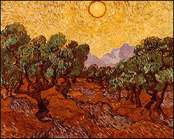

|
European 19th- & 20th-Century Art | |
|
(c) |
Vincent van Gogh |
|
An outstanding collection of French Impressionist art is
complemented by Fauve and Cubist works by Pablo Picasso,
Georges Braque, and Henri Matisse paintings and others. | |